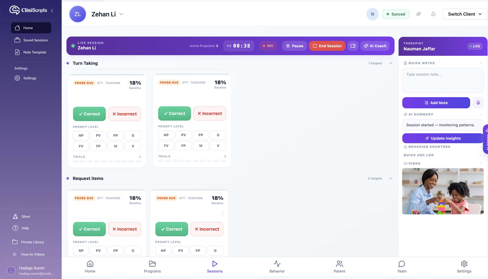

Extract product requirements from specialist papers, graphs and forms.
CliniScripts · Module 01C
Zero-to-one product · ABA · EMR care workflow
Turning clinical source material into a usable ABA care-management system.
Starting with papers, graphs and operational forms, I worked from domain inputs to requirements, workflows, interfaces and implementation support for a new ABA component within CliniScripts.

My role
Product design from source material to QA
Starting point
Papers, graphs and forms
Design focus
Care workflow, data entry and longitudinal context
Platform
New component within CliniScripts
01 · Problem
The domain knowledge existed, but not yet as a connected digital product.
The starting materials captured important clinical and operational practices in separate documents. My challenge was to understand their purpose, identify the users and sequence of work, then translate them into an experience that could live coherently inside the existing platform.
Connect plans, goals, sessions and progress over time.
Introduce a new domain without fragmenting established product patterns.
02 · Process
I converted domain artifacts into requirements, workflows and a prioritized product backlog.
Understand
Review source materials and use client conversations to clarify terminology, intent and responsibilities.
Structure
Group information into users, objects, actions, dependencies and review states.
Prioritize
Document requirements, move lower-priority requests to the backlog and focus the first delivery.
Prototype and ship
Design flows and high-fidelity UI, collaborate with engineering and review the implemented product.
Care workflow
One connected path from care planning to progress review.
The model gives each session a place in the longitudinal care story rather than treating forms and graphs as isolated records.
01Plan
→Define the care program and active goals.
02Deliver
→Record what happened during the session.
03Observe
→Structure data and relevant notes.
04Review
Use progress context to guide the next decision.
Information model
From scattered documents to reusable product objects.
The interface organizes the recurring concepts behind the source material so they can support consistent workflows and future iteration.
The larger structure of active treatment.
Specific outcomes connected to the plan.
Observations recorded in context.
Longitudinal information prepared for review.
03 · Execution
Zero-to-one product work grounded in real domain inputs.
- Source-material analysis
- Client calls and requirement gathering
- Requirements documentation
- Workflow and information modeling
- Backlog prioritization
- High-fidelity product design
- Engineering collaboration
- Implementation review and QA
What this demonstrates
My ability to enter a specialized domain, create structure and carry a new product area toward delivery.
This case study focuses on translating domain knowledge into a connected care workflow. It offers the strongest evidence of my zero-to-one and systems-design contribution.
Return to platform
CliniScripts overview 01